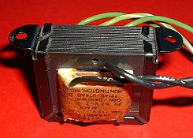

El transformador
Un transformador eleva (o reduce, a conveniencia) el voltaje de la corriente eléctrica. Este aumento de voltaje permite enviar la energía eléctrica a largas distancia minimizando las pérdidas (por efecto Joule) que se producen en su transporte a través de los cables eléctricos.
Transformador
| Transformador | ||
|---|---|---|
|  Pequeño transformador eléctrico |
||
| Tipo | Pasivo | |
| Principio de funcionamiento | Inducción electromagnética | |
| Invención | Zipernowsky, Bláthy y Deri (1884) | |
| Primera producción | En 1886 | |
| Símbolo electrónico | ||
| Terminales | Dos terminales para el bobinado primario y dos para el bobinado secundario o tres si tiene tap o toma central | |
| [editar datos en Wikidata] | ||
{kind=link}
{kind=link}
Se denomina transformador a un dispositivo eléctrico que permite aumentar o disminuir la tensión en un circuito eléctrico de corriente alterna, manteniendo la potencia. La potencia que ingresa al equipo, en el caso de un transformador ideal (esto es, sin pérdidas), es igual a la que se obtiene a la salida. Las máquinas reales presentan un pequeño porcentaje de pérdidas, dependiendo de su diseño y tamaño, entre otros factores.
El transformador es un dispositivo que convierte la energía eléctrica alterna de un cierto nivel de tensión, en energía alterna de otro nivel de tensión, basándose en el fenómeno de la inducción electromagnética. Está constituido por dos bobinas de material conductor, devanadas sobre un núcleo cerrado de material ferromagnético, pero aisladas entre sí eléctricamente. La única conexión entre las bobinas la constituye el flujo magnético común que se establece en el núcleo. El núcleo, generalmente, es fabricado bien sea de hierro o de láminas apiladas de acero eléctrico, aleación apropiada para optimizar el flujo magnético. Las bobinas o devanados se denominan primario y secundario según correspondan a la entrada o salida del sistema en cuestión, respectivamente. También existen transformadores con más devanados; en este caso, puede existir un devanado "terciario", de menor tensión que el secundario.
Índice
- 1 Principio de funcionamiento
- 2 Relación de transformación
- 3 Corriente de inserción
- 4 Historia
- 5 Transformador trifásico
- 5.1 Componentes
- 5.2 Configuraciones
- 5.3 Clases de ventilación
- 5.4 Según sus aplicaciones
- 5.4.1 Transformador elevador/reductor de tensión
- 5.4.2 Transformadores variables
- 5.4.3 Transformador de aislamiento
- 5.4.4 Transformador de alimentación
- 5.4.5 Transformador trifásico
- 5.4.6 Transformador de pulsos
- 5.4.7 Transformador de línea o Flyback
- 5.4.8 Transformador diferencial de variación lineal
- 5.4.9 Transformador con diodo dividido
- 5.4.10 Transformador de impedancia
- 5.4.11 Estabilizador de tensión
- 5.4.12 Transformador híbrido o bobina híbrida
- 5.4.13 Balun
- 5.4.14 Transformador electrónico
- 5.4.15 Transformador de frecuencia variable
- 5.4.16 Transformadores de medida
- 5.5
- 6 Véase también
- 7 Referencias
- 8 Enlaces externos
Principio de funcionamiento[editar]
{kind=link}
El funcionamiento de los transformadores se basa en el fenómeno de la inducción electromagnética, cuya explicación matemática se resume en las ecuaciones de Maxwell.
Al aplicar una fuerza electromotriz en el devanado primario o inductor, producida esta por la corriente eléctrica que lo atraviesa, se produce la inducción de un flujo magnético en el núcleo de hierro. Según la ley de Faraday, si dicho flujo magnético es variable, aparece una fuerza electromotriz en el devanado secundario o inducido. De este modo, el circuito eléctrico primario y el circuito eléctrico secundario quedan acoplados mediante un campo magnético.
La tensión inducida en el devanado secundario depende directamente de la relación entre el número de espiras del devanado primario y secundario y de la tensión del devanado primario. Dicha relación se denomina relación de transformación.
Relación de transformación[editar]
La relación de transformación indica el aumento o decremento que sufre el valor de la tensión de salida con respecto a la tensión de entrada, esto quiere decir, la relación entre la tensión de salida y la de entrada.
La relación entre la fuerza electromotriz inductora (Ep), aplicada al devanado primario y la fuerza electromotriz inducida (Es), obtenida en el secundario, es directamente proporcional al número de espiras de los devanados primario (Np) y secundario (Ns) , según la ecuación:
La relación de transformación (m) de la tensión entre el bobinado primario y el bobinado secundario depende de los números de vueltas que tenga cada uno. Si el número de vueltas del secundario es el triple del primario, en el secundario habrá el triple de tensión.
Donde: (Vp) es la tensión en el devanado primario o tensión de entrada, (Vs) es la tensión en el devanado secundario o tensión de salida, (Ip) es la corriente en el devanado primario o corriente de entrada, e (Is) es la corriente en el devanado secundario o corriente de salida.

Esta particularidad se utiliza en la red de transporte de energía eléctrica: al poder efectuar el transporte a altas tensiones y pequeñas intensidades, se disminuyen las pérdidas por el efecto Joule y se minimiza el costo de los conductores.
Así, si el número de espiras (vueltas) del secundario es 100 veces mayor que el del primario, al aplicar una tensión alterna de 230 voltios en el primario, se obtienen 23.000 voltios en el secundario (una relación 100 veces superior, como lo es la relación de espiras). A la relación entre el número de vueltas o espiras del primario y las del secundario se le llama relación de vueltas del transformador o relación de transformación.
Ahora bien, como la potencia eléctrica aplicada en el primario, en caso de un transformador ideal, debe ser igual a la obtenida en el secundario:
El producto de la diferencia de potencial por la intensidad (potencia) debe ser constante, con lo que en el caso del ejemplo, si la intensidad circulante por el primario es de 10 amperios, la del secundario será de solo 0,1 amperios (una centésima parte).
Corriente de inserción[editar]
{kind=link}
La corriente de inserción o corriente transitoria de magnetización es una corriente transitoria que se produce en el momento de conectar el transformador a la red. Su magnitud puede ser de 10 veces la corriente nominal hasta 100 veces en casos raros.[1]
Historia[editar]
{kind=link}
Primeros pasos: los experimentos con bobinas de inducción[editar]
El fenómeno de inducción electromagnética en el que se basa el funcionamiento del transformador fue descubierto por Michael Faraday en 1831, se basa fundamentalmente en que cualquier variación de flujo magnético que atraviesa un circuito cerrado genera una corriente inducida, y en que la corriente inducida sólo permanece mientras se produce el cambio de flujo magnético.
La primera "bobina de inducción" fue inventada por el sacerdote Nicholas Joseph Callan en la Universidad de Maynooth en Irlanda en 1836. Callan fue uno de los primeros investigadores en darse cuenta de que cuantas más espiras hay en el secundario, en relación con el bobinado primario, más grande es el aumento de la tensión eléctrica.
Los científicos e investigadores basaron sus esfuerzos en evolucionar las bobinas de inducción para obtener mayores tensiones en las baterías. En lugar de corriente alterna (CA), su acción se basó en un "do&break" mecanismo vibrador que regularmente interrumpía el flujo de la corriente directa (DC) de las baterías.
Entre la década de 1830 y la década de 1870, los esfuerzos para construir mejores bobinas de inducción, en su mayoría por ensayo y error, reveló lentamente los principios básicos de los transformadores. Un diseño práctico y eficaz no apareció hasta la década de 1880, pero dentro de un decenio, el transformador sería un papel decisivo en la “Guerra de las Corrientes”, y en que los sistemas de distribución de corriente alterna triunfaron sobre sus homólogos de corriente continua, una posición dominante que mantienen desde entonces.
En 1876, el ingeniero ruso Pavel Yablochkov inventó un sistema de iluminación basado en un conjunto de bobinas de inducción en el cual el bobinado primario se conectaba a una fuente de corriente alterna y los devanados secundarios podían conectarse a varias lámparas de arco, de su propio diseño. Las bobinas utilizadas en el sistema se comportaban como transformadores primitivos. La patente alegó que el sistema podría, “proporcionar suministro por separado a varios puntos de iluminación con diferentes intensidades luminosas procedentes de una sola fuente de energía eléctrica”.
En 1878, los ingenieros de la empresa Ganz en Hungría asignaron parte de sus recursos de ingeniería para la fabricación de aparatos de iluminación eléctrica para Austria y Hungría. En 1883, realizaron más de cincuenta instalaciones para dicho fin. Ofrecía un sistema que constaba de dos lámparas incandescentes y de arco, generadores y otros accesorios.
En 1882, Lucien Gaulard y John Dixon Gibbs expusieron por primera vez un dispositivo con un núcleo de hierro llamado "generador secundario" en Londres, luego vendieron la idea a la compañía estadounidense Westinghouse Electric. También este sistema fue expuesto en Turín, Italia en 1884, donde fue adoptado para el sistema de alumbrado eléctrico.
El nacimiento del primer transformador[editar]
Entre 1884 y 1885, los ingenieros húngaros Károly Zipernowsky, Ottó Bláthy y Miksa Déri, de la compañía Ganz, de ese país, crearon en Budapest el modelo “ZBD” de transformador de corriente alterna, basado en un diseño de Gaulard y Gibbs (Gaulard y Gibbs sólo diseñaron un modelo de núcleo abierto). Descubrieron la fórmula matemática de los transformadores:
donde Vs es la tensión en el secundario y Ns es el número de espiras en el secundario; Vp y Np se corresponden al primario.
Su solicitud de patente hizo el primer uso de la palabra transformador, que había sido acuñada por Bláthy Ottó.
En 1885, George Westinghouse compró las patentes del ZBD y las de Gaulard y Gibbs. Él le encomendó a William Stanley la construcción de un transformador de tipo ZBD para uso comercial. Este diseño se utilizó por primera vez comercialmente en 1886.
Otra información de interés[editar]
{kind=link}
El primer sistema comercial de corriente alterna con fines de distribución de la energía eléctrica que usaba transformadores se puso en operación en 1886 en Great Barington, Massachusetts, en los Estados Unidos de América. En ese mismo año, la electricidad se transmitió a 2000 voltios en corriente alterna a una distancia de 30 kilómetros, en una línea construida en Cerchi, Italia. A partir de esta pequeña aplicación inicial, la industria eléctrica en el mundo ha recorrido en tal forma, que en la actualidad es factor de desarrollo de los pueblos, formando parte importante en esta industria el transformador. El aparato que aquí se describe es una aplicación, entre tantas, derivada de la inicial bobina de Ruhmkorff o carrete de Ruhmkorff, que consistía en dos bobinas concéntricas. A una bobina, llamada primario, se le aplicaba una corriente continua proveniente de una batería, conmutada por medio de un ruptor movido por el magnetismo generado en un núcleo de hierro central por la propia energía de la batería. El campo magnético así creado variaba al compás de las interrupciones, y en el otro bobinado, llamado secundario y con muchas más espiras, se inducía una corriente de escaso valor pero con una fuerza eléctrica capaz de saltar entre las puntas de un chispómetro conectado a sus extremos.
También da origen a las antiguas bobinas de ignición del automóvil Ford T, que poseía una por cada bujía, comandadas por un distribuidor que mandaba la corriente a través de cada una de las bobinas en la secuencia correcta.
Transformador trifásico[editar]
{kind=link}
Los transformadores trifásicos son muy importantes ya que están presentes en muchas partes del sistema eléctrico. Este tipo de transformadores se ocupa de la elevación y reducción de la tensión en diversas partes del sistema eléctrico: En generación cerca de los generadores para elevar la insuficiente tensión de estos, así como también en las líneas de transmisión y, por último, en distribución en donde se distribuye la energía eléctrica a voltajes menores hacia casas, comercios e industrias. Todos los transformadores desde el generador hasta la entrada a nuestros hogares o industrias son transformadores trifásicos.
Un transformador trifásico consta de tres fases desplazadas en 120 grados eléctricos, en sistemas equilibrados tienen igual magnitud. Una fase consiste en un polo positivo y negativo por el que circula una corriente alterna.
Las diferentes formas de conexión de los bobinados trifásicos de un transformador, recibe el nombre de grupo de conexionado. Además de identificar las conexiones de los bobinados primario y secundario (estrella, triángulo o zig-zag), el grupo de conexionado indica el desfasaje entre las tensiones de línea primaria y secundaria, de los sistemas trifásicos vinculados por el transformador. Los grupos de conexionado más comúnmente utilizados en la distribución de energía eléctrica son Dy5 (primario en triángulo, secundario en estrella, desfasaje 150 grados) y Dy11 (triángulo, estrella, 330 grados), Yy0 (estrella, estrella, 0 grados), Yd11 (estrella, triángulo, 330 grados), entre otros. El concepto práctico de grupo de conexionado adquiere relevancia para realizar una operación segura, durante la puesta en paralelo de transformadores.
Componentes[editar]
El núcleo[editar]
El núcleo está formado por varias chapas u hojas de metal (generalmente material ferromagnético) que están apiladas una junto a la otra, sin soldar, similar a las hojas de un libro. La función del núcleo es mantener el flujo magnético confinado dentro de él y evitar que este fluya por el aire favoreciendo las perdidas en el núcleo y reduciendo la eficiencia. La configuración por laminas del núcleo laminado se realiza para evitar las corrientes de Foucault, que son corrientes que circulan entre laminas, indeseadas pues favorecen las perdidas.
Bobinas[editar]
Las bobinas son simplemente alambres generalmente de cobre enrollado en las piernas del núcleo. Según el número de espiras (vueltas) alrededor de una pierna inducirá un voltaje mayor. Se juega entonces con el número de vueltas en el primario versus las del secundario. En un transformador trifásico el número de vueltas del primario y secundario debería ser igual para todas las fases.
Cambiador de taps[editar]
El cambiador de taps o derivaciones es un dispositivo generalmente mecánico que puede ser girado manualmente para cambiar la razón de transformación en un transformador, típicamente, son cinco pasos uno de ellos es neutral, los otros alteran la razón en más o menos el 2.5 %. Por ejemplo esto ayuda a subir el voltaje en el secundario para mejorar un voltaje muy bajo en alguna barra del sistema.
Relé de sobrepresión[editar]
Es un dispositivo mecánico que nivela el aumento de presión del transformador que pueden hacerlo explotar. Sin embargo existen varios equipos que explotan a pesar de tener este dispositivo. Existen el relé de presión súbita para presiones transitorias y el relé de sobrepresión para presiones más permanentes.
Tablero de control[editar]
Contiene las conexiones eléctricas para el control, relés de protección eléctrica, señales de control de válvulas de sobrepresión hacia dispositivos de protección.
Configuraciones[editar]
Las bobinas pueden ser conectadas de forma diferente en delta, estrella, o T. Se pueden hacer transformadores trifásicos de tres formas distintas:
- Conectando tres transformadores monofásicos
- Núcleo tipo acorazado
- Transformador tipo núcleo.
Clases de ventilación[editar]
Hay diferentes tipos de ventilación en un transformador. La ventilación puede ser por:
- convección natural (N).
- ventilación forzada (F).
- ventilación forzada a través de un refrigerador (D)
El refrigerante al interior del estante del transformador es de varios tipos:
- aceite, o líquidos aislantes con un punto de inflamación ≤ 300ºC (O del inglés Oil).
- líquidos aislantes con un punto de inflamación > 300ºC (K).
- líquidos aislantes con un punto de inflamación no medible (L).
- agua (W, del inglés Water).
- gas (G).
- aire (A).
La nomenclatura que designa la ventilación es del tipo XYXY, donde X indica el tipo de refrigerante, y el Y la ventilación usada. Según esto existen:
- ONAN
- ONAF
- ONWF
- OFAF
Según sus aplicaciones[editar]
Transformador elevador/reductor de tensión[editar]
{kind=link}
Son empleados por empresas de generación eléctrica en las subestaciones de la red de transporte de energía eléctrica, con el fin de disminuir las pérdidas por efecto Joule. Debido a la resistencia de los conductores, conviene transportar la energía eléctrica a tensiones elevadas, lo que origina la necesidad de reducir nuevamente dichas tensiones para adaptarlas a las de utilización. La mayoría de los dispositivos electrónicos en hogares hacen uso de transformadores reductores conectados a un circuito rectificador de onda completa para producir el nivel de tensión de corriente directa que necesitan. Este es el caso de las fuentes de alimentación de equipos de audio, video y computación.
Transformadores variables[editar]
También llamados "Variacs", toman una línea de tensión fija (en la entrada) y proveen de tensión de salida variable ajustable, dentro de dos valores.
Transformador de aislamiento[editar]
Proporciona aislamiento galvánico entre el primario y el secundario, de manera que consigue una alimentación o señal "flotante". Suele tener una relación 1:1 entre las tensiones del primario y secundario. Se utiliza principalmente como medida de protección, en equipos que trabajan directamente con la tensión de red y también para acoplar señales procedentes de sensores lejanos, en equipos de electromedicina y donde se necesitan tensiones flotantes.
Transformador de alimentación[editar]
Pueden tener una o varias bobinas secundarias y proporcionan las tensiones necesarias para el funcionamiento del equipo. A veces incorpora un fusible térmico que corta su circuito primario cuando el transformador alcanza una temperatura excesiva, evitando que éste se queme, con la emisión de humos y gases que conlleva el riesgo de incendio. Estos fusibles, no suelen ser reemplazables cuando se encuentran alojados en el interior de los devanados.
{kind=link}
{kind=link}
{kind=link}
Transformador trifásico[editar]
Tienen tres bobinados en su primario y tres en su secundario. Pueden adoptar forma de estrella (Y) (con hilo de neutro o no) o delta -triángulo- (Δ) y las combinaciones entre ellas: Δ-Δ, Δ-Y, Y-Δ y Y-Y. Hay que tener en cuenta que aún con relaciones 1:1, al pasar de Δ a Y o viceversa, las tensiones de fase varían.
- Delta estrella: Se usa especialmente en distribución (baja tensión) con delta en alta y estrella en baja con neutro accesible. Esto permite que la onda sinusoidal de tercera armónica se mantenga circulando por la delta, pero no se transmita a las estrella.
Transformador de pulsos[editar]
Es un tipo especial de transformador con respuesta muy rápida (baja autoinducción) destinado a funcionar en régimen de pulsos. Su principal aplicación es transferir impulsos de mando sobre elementos de control de potencia como SCR, triacs, etc. logrando un aislamiento galvánico entre las etapas de mando y potencia.
Transformador de línea o Flyback[editar]
Es un caso particular de transformador de pulsos. Se emplea en los televisores con TRC (CRT) para generar la alta tensión y la corriente para las bobinas de deflexión horizontal. Suelen ser pequeños y económicos. Además suele proporcionar otras tensiones para el tubo (foco, filamento, etc.). Además de poseer una respuesta en frecuencia más alta que muchos transformadores, tiene la característica de mantener diferentes niveles de potencia de salida debido a sus diferentes arreglos entre sus bobinados secundarios.
Transformador diferencial de variación lineal[editar]
El transformador diferencial de variación lineal (LVDT según sus siglas en inglés) es un tipo de transformador eléctrico utilizado para medir desplazamientos lineales. El transformador posee tres bobinas dispuestas extremo con extremo alrededor de un tubo. La bobina central es el devanado primario y las externas son los secundarios. Un centro ferromagnético de forma cilíndrica, sujeto al objeto cuya posición desea ser medida, se desliza con respecto al eje del tubo.
Los LVDT son usados para la realimentación de posición en servomecanismos y para la medición automática en herramientas y muchos otros usos industriales y científicos.
Transformador con diodo dividido[editar]
Es un tipo de transformador de línea que incorpora el diodo rectificador para proporcionar la tensión continua de MAT directamente al tubo. Se llama diodo dividido porque está formado por varios diodos más pequeños repartidos por el bobinado y conectados en serie, de modo que cada diodo sólo tiene que soportar una tensión inversa relativamente baja. La salida del transformador va directamente al ánodo del tubo, sin diodo ni triplicador.
Transformador de impedancia[editar]
Este tipo de transformador se emplea para adaptar antenas y líneas de transmisión (tarjetas de red, teléfonos, etc.) y era imprescindible en los amplificadores de válvulas para adaptar la alta impedancia de los tubos a la baja de los altavoces.
Si se coloca en el secundario una impedancia de valor Z, y llamamos n a Ns/Np, como Is=-Ip/n y Es=Ep.n, la impedancia vista desde el primario será Ep/Ip = -Es/n²Is = Z/n². Así, hemos conseguido transformar una impedancia de valor Z en otra de Z/n². Colocando el transformador al revés, lo que hacemos es elevar la impedancia en un factor n².
Estabilizador de tensión[editar]
Es un tipo especial de transformador en el que el núcleo se satura cuando la tensión en el primario excede su valor nominal. Entonces, las variaciones de tensión en el secundario quedan limitadas. Tenía una labor de protección de los equipos frente a fluctuaciones de la red. Este tipo de transformador ha caído en desuso con el desarrollo de los reguladores de tensión electrónicos, debido a su volumen, peso, precio y baja eficiencia energética.
Transformador híbrido o bobina híbrida[editar]
Es un transformador que funciona como una híbrida. De aplicación en los teléfonos, tarjetas de red, etc.
Balun[editar]
Es muy utilizado como balun para transformar líneas equilibradas en no equilibradas y viceversa. La línea se equilibra conectando a masa la toma intermedia del secundario del transformador.
Transformador electrónico[editar]
Está compuesto por un circuito electrónico que eleva la frecuencia de la corriente eléctrica que alimenta al transformador, de esta manera es posible reducir drásticamente su tamaño. También pueden formar parte de circuitos más complejos que mantienen la tensión de salida en un valor prefijado sin importar la variación en la entrada, llamados fuente conmutada.
Transformador de frecuencia variable[editar]
Son pequeños transformadores de núcleo de hierro, que funcionan en la banda de audiofrecuencias. Se utilizan a menudo como dispositivos de acoplamiento en circuitos electrónicos para comunicaciones, medidas y control.
Transformadores de medida[editar]
Entre los transformadores con fines especiales, los más importantes son los transformadores de medida para instalar instrumentos, contadores y relés protectores en circuitos de alta tensión o de elevada corriente. Los transformadores de medida aíslan los circuitos de medida o de relés, permitiendo una mayor normalización en la construcción de contadores, instrumentos y relés.
{kind=link}
[editar]
{kind=link}
{kind=link}
Autotransformador[editar]
El primario y el secundario del transformador están conectados en serie, constituyendo un bobinado único. Pesa menos y es más barato que un transformador y por ello se emplea habitualmente para convertir 220 V a 125 V y viceversa y en otras aplicaciones similares. Tiene el inconveniente de no proporcionar aislamiento galvánico entre el primario y el secundario.
Transformador con núcleo toroidal o envolvente[editar]
El núcleo consiste en un anillo, normalmente de compuestos artificiales de ferrita, sobre el que se bobinan el primario y el secundario. Son más voluminosos, pero el flujo magnético queda confinado en el núcleo, teniendo flujos de dispersión muy reducidos y bajas pérdidas por corrientes de Foucault.
Transformador de grano orientado[editar]
El núcleo está formado por una chapa de hierro de grano orientado, enrollada sobre sí misma, siempre en el mismo sentido, en lugar de las láminas de hierro dulce separadas habituales. Presenta pérdidas muy reducidas pero es caro. La chapa de hierro de grano orientado puede ser también utilizada en transformadores orientados (chapa en E), reduciendo sus pérdidas.
Bobina de núcleo de aire[editar]
En aplicaciones de alta frecuencia se emplean bobinados sobre un carrete sin núcleo o con un pequeño cilindro de ferrita que se introduce más o menos en el carrete, para ajustar su inductancia.
Transformador de núcleo envolvente[editar]
Están provistos de núcleos de ferrita divididos en dos mitades que, como una concha, envuelven los bobinados. Evitan los flujos de dispersión.
Transformador piezoeléctrico[editar]
Para ciertas aplicaciones han aparecido en el mercado transformadores que no están basados en el flujo magnético para transportar la energía entre el primario y el secundario, sino que se emplean vibraciones mecánicas en un cristal piezoeléctrico. Tienen la ventaja de ser muy planos y funcionar bien a frecuencias elevadas. Se usan en algunos convertidores de tensión para alimentar las lámparas fluorescentes de los monitores de led y TFT usados en computación y en televisión.
Véase también[editar]
- Autotransformador
- Multiplicador de tensión
- Divisor de tensión
- Cambiador de tomas
- Transformador frecuencia intermedia
Referencias[editar]
- ↑ Brokering Christie, Walter; Palma Behnke, Rodrigo; Vargas Díaz, Luis (2008). «Cap. 5». Ñom Lüfke (El rayo domado) o Los sistemas eléctricos de potencia. Prentice Hall. p. 84. ISBN 9789702612926.
Enlaces externos[editar]
 Wikimedia Commons alberga contenido multimedia sobre TransformadorCommons.
Wikimedia Commons alberga contenido multimedia sobre TransformadorCommons.
- Wikilibros alberga un libro o manual sobre Transformador.
- Wikcionario tiene definiciones y otra información sobre transformador.Wikcionario
- Resumen de la teoría de los transformadores de potencia de la Universidad de Cantabria (España).
- Medida de la resistencia de bobinados en transformadores. Artículo didáctico.
- Símbolos de transformadores.
- Cómo calcular un transformador.